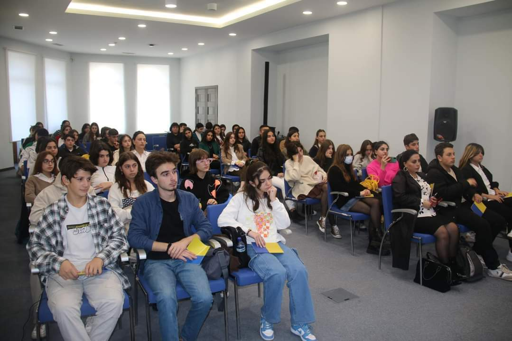

Მედიისა და ინფორმაციული წიგნიერების კვირეულის ფარგლებში ჩვენი სკოლის მოსწავლეები დაესწრნენ შეხვედრას,რომელიც ჩატარდა ნატოსა და ევროკავშირის საინფორმაციო ცენტრის მიერ.შეხვედრაზე განხილული იქნა მითები ნატოსა და ევროკავშირში გავცელების შესახებ,ასევე იყო ნატოსა და ევროკავშირის ისტორიის მიმოხილვა და მედიაწიგნიერებისა და კრიტიკული აზროვნების როლი ანტიდასავლურ პროპაგანდასთან ბრძოლის კონტექსტში.შეხვედრის ბოლოს იყო ვიქტორინა,რომელშიც წარმატებით იასპარეზეს ჩვენი სკოლის მოსწავლეებმა.
1 დეკემბერს, 14:00 საათზე, 32-ე საჯარო სკოლაში ტარდება ღონისძიება, სადაც წარდგენილი იქნება სამოქალაქო კლუბის სამოქმედო გეგმა და მიმდინარე პროექტები. პროექტები შეეხება სხვადასხვა აქტუალურ პრობლემებსა და საკითხებს. მონაწილეები იქნებიან მე-10 და მე-8 კლასელები. პედაგოგი: ხათუნა ბაღაშვილი. ღონისძიება ჩატარდება სააქტო დარბაზში.